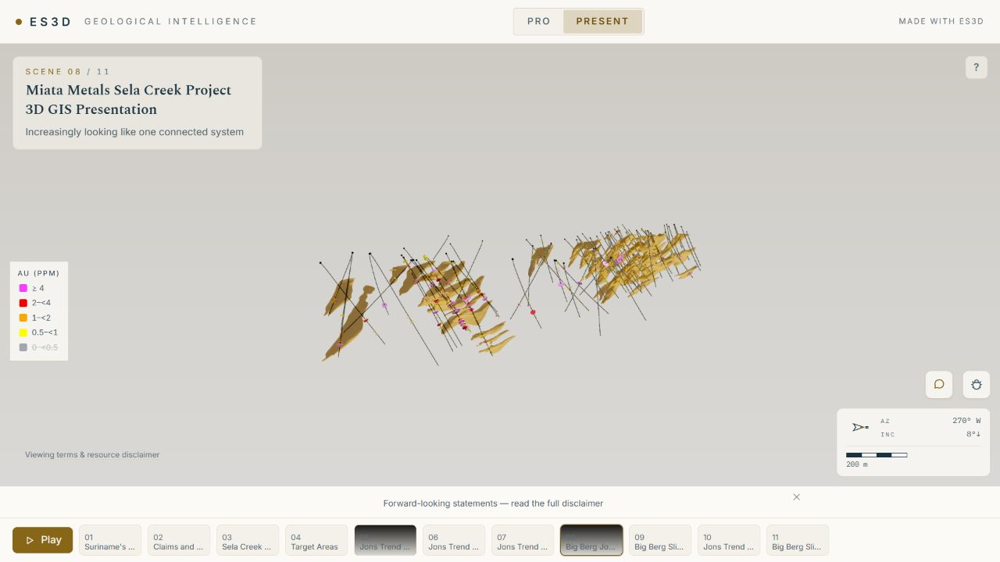

On miata.gold, visitors can move from the company’s investment story into the Sela Creek model on the same page. The presentation sits alongside project information, news releases, and a drill database, so the geological context stays close to the underlying disclosure.
The viewer loads when requested. Visitors can follow the scene tour, explore the model, or open a larger view for a closer look.
The Miata website is currently password-protected ahead of launch. Contact us for a walkthrough.

We review your available drilling, geological surfaces, GIS layers, and imagery, and agree what the presentation needs to communicate.
We choose the views, sequence, and annotations that help an audience understand the project. Your technical team reviews the content before release.
Share the presentation by link or integrate it into your corporate website. Use the same project story in a meeting and during a visitor’s own exploration.
Talk through your data, your audience, and a website integration.
Book an ES3D walkthrough {% include "cta-assurance.html" %} Explore ES3D at exploration.rocks ↗